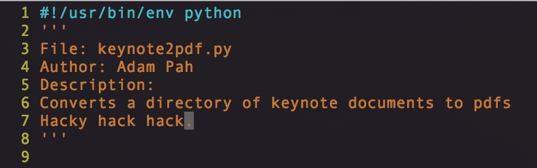

Batch Convert Keynote to PDF

So I use Macs (you probably noticed, right? It has unix but it can still connect to any random
projector and still work so it's a winner in academia) and that leads me to using some nonstandard
software every now and then that's OS X only. Keynote is one of those programs. Powerpoint drives me
crazy, so I've been driven into its user-friendly, unshareable arms.
But the good times have finally come to an end. Using Keynote for presentations and using my own
laptop or exporting a single presentation to a PDF hasn't ever been an issue, but now I have 20
course lectures that I need to distribute to my students and I'm not about to open each one and
export it to PDF every time I make a change to a single slide.
Googling for a quick, straightforward answer was a nightmare. Some examples I found used Applescript, which I couldn't get to work on Yosemite (OS X 10.10). Scratch that, I've never gotten any Applescripts to really work/written one (who the hell knows why). But this was still fairly annoying as accessibility errors kept popping up and I didn't care enough to figure out why.
So instead I went ahead and cobbled together various parts of other bash scripts I found. I think in the end I put together two or three of them to get a final working product. I ended up with a workflow like this:
- qlmanage to unpack a Keynote into a folder with a PDF of each slide and an HTML page that says the order
- Read the HTML page to find the order of the PDFs
- Use a built in OS X executable to join the individual PDF pages are
which led to this script that I put up as a gist. It's hacky, hacky, hacky, hacky (I threw it together as quick as I could after a couple total hours invested in this). Right now it'll execute in a directory and export every single Keynote file it finds. It should be changed to do either a directory or a single file, use some actual command execution instead of os.system, something to actually clean filenames other than three quick lines....but, hey. It's done!